Ege Bölgesi
Türkiye zeytinyağı üretiminin ana merkezi olan Ege Bölgesi, Ayvalık ve Memecik gibi çeşitlerle güçlü bir profil sunar.
Ege Bölgesi odaklı zeytinyağı markaları, benzer bölgeler ve ilgili zeytin çeşitleri. 213 marka listesi.
Bu Sayfadaki Markalar
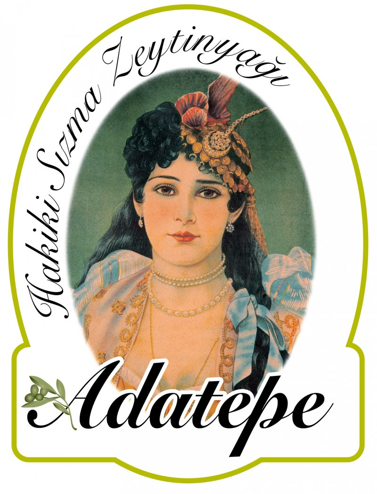
Premium / Butik Öne ÇıkanAdatepe
Kazdağları eteklerinde üretim yapan köklü marka. Taş baskı ve natürel sızma zeytinyağı çeşitleriyle bilinir....
Komili
1878'den bu yana Türkiye'nin en köklü zeytinyağı markalarından biri. Ayvalık merkezli, geniş ürün yelpazesi ile hem soğuk sıkım natürel sızma hem de riviera çeşitleri sunar....
Laleli
Ödüllü Türk zeytinyağı markası. Uluslararası yarışmalarda çok sayıda altın madalya kazanmıştır. Erken hasat natürel sızma zeytinyağları ile bilinir....
Nermin Hanım Zeytinliği
Ayvalık merkezli butik üretici. Erken hasat ve izlenebilir üretim yaklaşımıyla natürel sızma ürünler sunar....
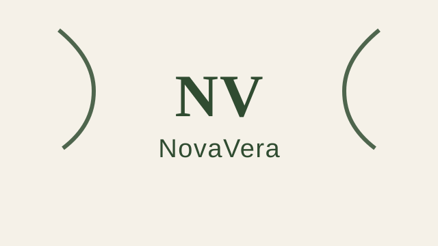
Premium / Butik Öne ÇıkanNovaVera
Kuzey Ege merkezli butik üretici. Erken hasat, soğuk sıkım ve yüksek polifenol odaklı natürel sızma zeytinyağlarıyla bilinir....
Oleamea
Premium segment Türk zeytinyağı markası. Uluslararası yarışmalarda ödüller kazanmıştır. Erken hasat, yüksek polifenollü natürel sızma zeytinyağları sunar....
Tariş
Ege Bölgesi zeytinyağı kooperatiflerinin birliği. Üreticiden doğrudan temin edilen zeytinlerle üretim yapar. Türkiye'nin en büyük zeytinyağı ihracatçılarından biridir....
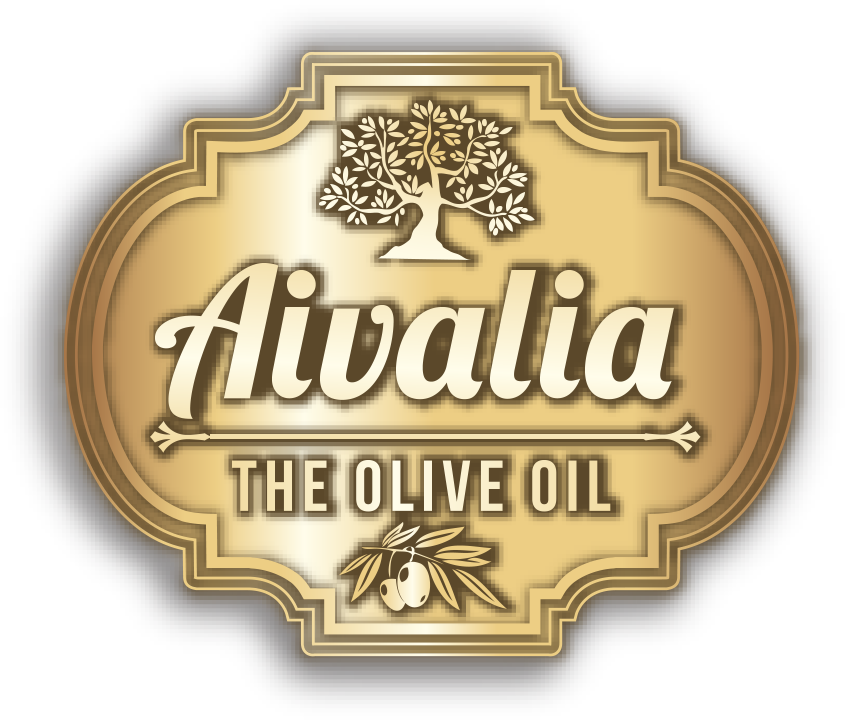
Bölgesel / YerelAivalia
Aivalia zeytinyağlarını uygun koşullarda üretip tüm müşterilerimizin yüzde yüz zeytinyağının tadına varmalarını sağlıyoruz....
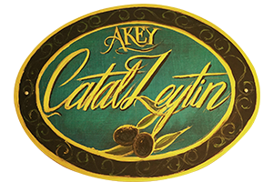
Premium / ButikAkey Çatal Zeytin
Akey Çatal Zeytin - Doğal Zeytinyağı...
Alaboğaz
Alaboğaz, müşterilerine Milas bölgesindeki Memecik cinsi zeytinlerini erken hasat eden, soğuk sıkım yöntemiyle işleyip yüksek polifenollü natürel sızma Milas Zeytinyağı sağlayan bu...
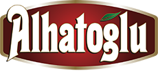
Premium / ButikAlhatoğlu Zeytinyağları
Sofralık zeytin kalitesinde zeytinlerden elde ettiğimiz düşük asitli ve yüksek kaliteli zeytinyağlarımız sofralarınızın vazgeçilmezi olacak......
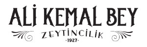
Premium / ButikAli Kemal Bey
Ali Kemal Bey, Ayvalık, Balıkesir çizgisinde natürel sızma ve özel seri zeytinyağı sunan üretici olarak öne çıkar....
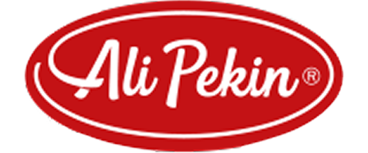
Bölgesel / YerelAli Pekin
Yöresel, taze, lezzetli ve sağlıklı gıda ürünleri satış mağazası. Kalite Sertifikalı Zeytin, Zeytinyağı çeşitleri, Peynir çeşitleri ve sağlıklı gıda satışı...
Alpoliva
Alpoliva, yerel üretim çizgisinde zeytinyağı sunan üretici olarak dizine eklenmiştir....
Anafortis
Eceabat çıkışlı, ödüllü erken hasat natürel sızma zeytinyağlarıyla tanınan butik üretici....
Angelos
Angelos, İzmir çizgisinde organik üretim çizgisinde zeytinyağı sunan üretici olarak öne çıkar....
Anıt Yağ
Anıt Yağ, yerel üretim çizgisinde zeytinyağı sunan üretici olarak dizine eklenmiştir....
Anolive
Ayvalık bölgesinde premium natürel sızma zeytinyağı üretimi yapan marka....
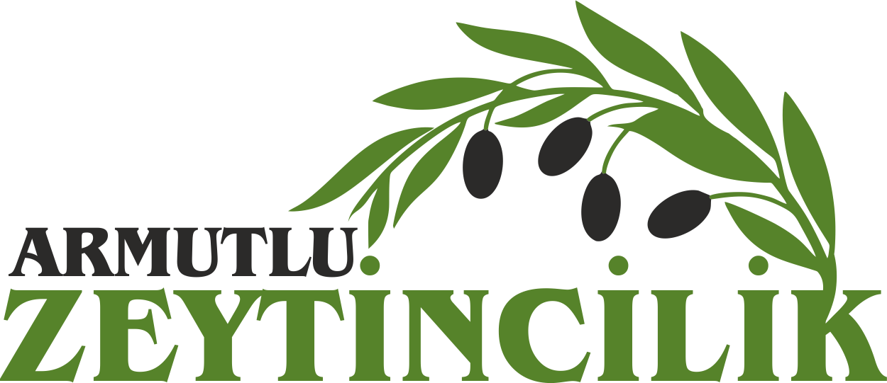
Premium / ButikArmutlu Zeytincilik
Armutluzeytincilik.com...
Asiltane
Soğuk sıkım ve özel hasat serileri sunan natürel sızma üreticisi. Farklı hacimlerde premium zeytinyağı çeşitleri hazırlar....
Ayolis
Ayvalık bölgesinden premium natürel sızma zeytinyağı üreten marka....
Ayvaco
Ayvacık çevresinde üretim yapan yerel marka. Soğuk sıkım natürel sızma zeytinyağı çeşitleriyle bilinir....
Ayvada
1925’ten beri 4 kuşaktır Ayvalık’ta kendi zeytinliğinden üretilen tek bahçe erken hasat soğuk sıkım natürel sızma zeytinyağı. Gerçek zeytinyağını keşfedin....
Bella Mordane
Bella Mordane'nin yüksek polifenollü, düşük asit oranlı zeytinleri ile tanışın. İlk ve erken hasat zeytinyağlarımız soğuk sıkım yöntemiyle elde edilir....
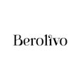
Premium / ButikBerolivo
Eceabat çıkışlı sürdürülebilir ve yüksek kaliteli natürel sızma zeytinyağı üreten butik marka....
Bilgem Zeytin
<p>Kuzey Ege’de Balıkesir, Burhaniye, Yunuslar Köyü yaylasında, kendi zeytinliğimizde yetişen, Organik Edremit/Ayvalık cinsi zeytinlerden elde edilen Natural Sızma Zeytinyağlar ...
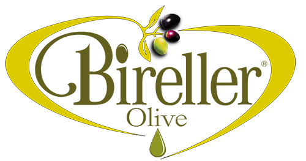
Premium / ButikBireller Olive
Bireller Olive - Zeytin, Zeytinyağı ve Doğal Zeytinyağlı Kozmetik ürünleri üretim ve satışı, Taş kırma soğuk sıkım Ayvalık Edremit Burhaniye Altınova zeytinlerinden elde edilen sız...
Bozelli
Akhisar çıkışlı ödüllü natürel sızma zeytinyağlarıyla bilinen aile üreticisi. Kendi bahçelerinden gelen ürünleri vurgular....
Buta Assos
Assos bölgesinde üretilen zeytinlerden premium natürel sızma zeytinyağı sunan marka....
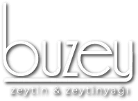
Bölgesel / YerelBuzey
Burhaniye çıkışlı natürel sızma ve soğuk sıkım zeytinyağları sunan yerel üretici....
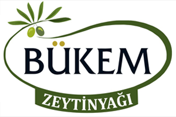
Premium / ButikBÜKEM ZEYTİNYAĞLARI
BÜKEM ZEYTİNYAĞLARI, Akhisar, Manisa çizgisinde natürel sızma ve özel seri zeytinyağı sunan üretici olarak öne çıkar....
By TEO
Edremit'in En Lezzetli Zeytinyağları'ndan Sofranıza | Byteo Zeytincilik – Mükemmel Nefaset Sofralarınızda...
Coşkun Zeytinyağları
Köklü Türk zeytinyağı üreticisi. Uzun yıllar boyunca Ege zeytinlerinden kaliteli zeytinyağı üretmektedir....
Cömert
Ayvalık Zeytin Zeytinyağını Sadece Ayvalık Yöresi Zeytinlerden Elde Edip Yöremizin En Kaliteli Zeytin ve Zeytinyağını Siz Değerli Müşterilerimizin Beğenisine Sunmaktayız....
Çakırhan
Çakırhan, organik üretim çizgisinde zeytinyağı sunan üretici olarak dizine eklenmiştir....
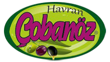
Premium / ButikÇobanöz Zeytincilik
Edremit Zeytini Online Satış Mağazası | Edremit Zeytin & Zeytinyağları Satış Pazarlama Sitesi...
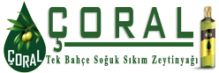
Premium / ButikÇoral
Eceabat çıkışlı ödüllü natürel sızma zeytinyağı serileri sunan butik üretici....
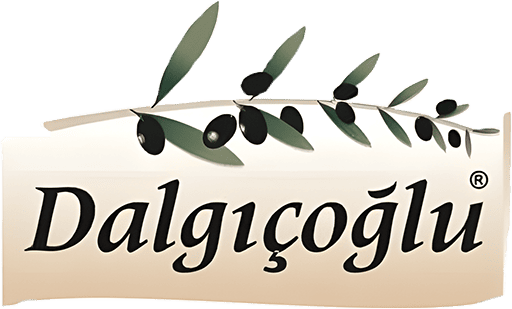
Bölgesel / YerelDalgıçoğlu
Edremit Körfezi çevresinde üretim yapan marka. Bölgesel zeytinyağı ürünleri sunar....
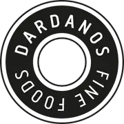
Premium / ButikDardanos Fine Foods
Gerçek meyvelerle üretilen 12 farklı çeşnili ve naturel sızma zeytinyağları. Sofranıza şıklık katan tatlar. İlk siparişe özel %10 indirimle hemen keşfedin....
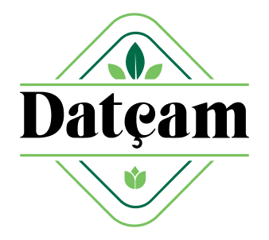
Bölgesel / YerelDatçam
Datça çıkışlı natüreli soğuk sıkım zeytinyağı serileri sunan yerel üretici....
Dem Green
Dem Green, Urla, İzmir çizgisinde natürel sızma ve özel seri zeytinyağı sunan üretici olarak öne çıkar....
Dervişoğlu Zeytin
Dervişoğlu Zeytin, Gemlik zeytininden elde edilen zeytinyağları ve özenle hazırlanmış doğal zeytin çeşitleriyle sofralarınızı şenlendiriyoruz....
Dizem Organik
Dizem Organik Zeytinyağları ile Kuzey Ege...
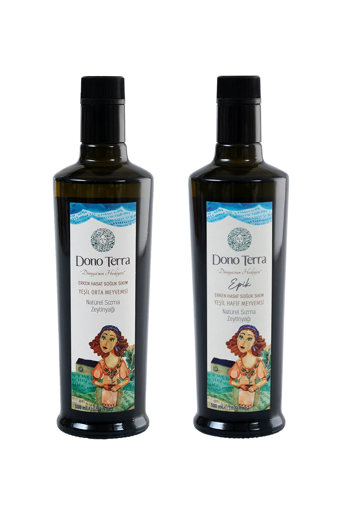
Premium / ButikDono Terra
Dono Terra zeytinyağları, ödüllü erken hasat ve olgun hasat seçenekleriyle doğanın en saf lezzetini sofralarınıza getiriyor. Uluslararası kalite standartlarına sahip zeytinyağlarım...
Drop
Drop Zeytin ve Zeytinyağları Altınoluk / Balıkesir...
Durukaan
Durukaan, yerel üretim çizgisinde zeytinyağı sunan üretici olarak dizine eklenmiştir....
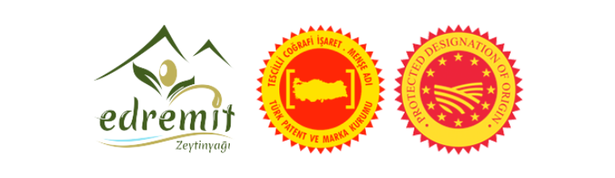
Bölgesel / YerelEdremit Körfezi
Edremit Körfezi'nin eşsiz ikliminde yetişen zeytinlerden üretilen natürel sızma zeytinyağı. ZETAŞ olarak da bilinir....
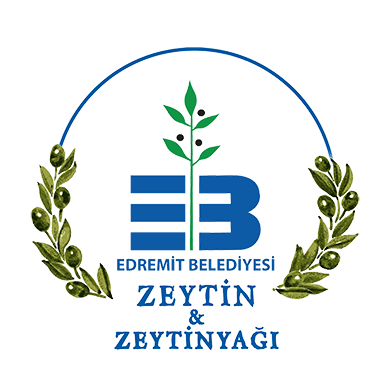
OrganikEdremit’in Zeytini
edremitinzeytini.com...
Edremith
Edremith® Doğal Organik Ürünler - Edremit Zeytinyağı, Zeytin, Ev Yapımı Doğal Organik Ürünler. Kazdağları'ndan Gelen Lezzet. Hemen sipariş verin kapınıza gelsin...
Ege Masalı
Ege Masalı Organik Zeytinyağı, Ayvalık Zeytinyağı, Organik Zaytinyağı, Natural Zeytinyağı...
Egeo Norte
Egeo Norte, yerel üretim çizgisinde zeytinyağı sunan üretici olarak dizine eklenmiştir....
Eminems Olive Oil
Eminems Olive Oil, Milas, Muğla çizgisinde natürel sızma ve özel seri zeytinyağı sunan üretici olarak öne çıkar....
ERGENECİ ZEYTİNCİLİK
Ergeneci Zeytincilik – Ayvalık Natürel Sızma Zeytinyağı...
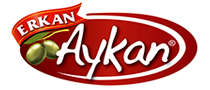
OrganikErkan Aykan
Erkan Aykan Zeytincilik, Sızma Zeytinyağı, Soğuk Sıkım Zeytinyağı, Taş Baskı Zeytinyağı, Edremit Çizik Zeytin, Edremit Kırma Zeytin, Siyah Zeytin Çeşitleri Kredi Kartı ile ödeme ve...
Eşref Bey Zeytincilik
Taze, Aromatik ve Nitelikli Erken Hasat Naturel Sızma Zeytinyağı Deneyimi şimdi www.esrefbeyzeytincilik.com...
Evliyazade
Evliyazade Ayvalık Zeytinyağı -- 1886 yılında Evliyazade Şakir Efendi tarafından kurulan, Evliyazade zeytinyağı fabrikası, Edremit...
Fayton
Ege vurgusuyla erken hasat ve soğuk sıkım natürel sızma zeytinyağı sunan butik üretici. Doğallık ve geleneksel üretim diliyle öne çıkar....
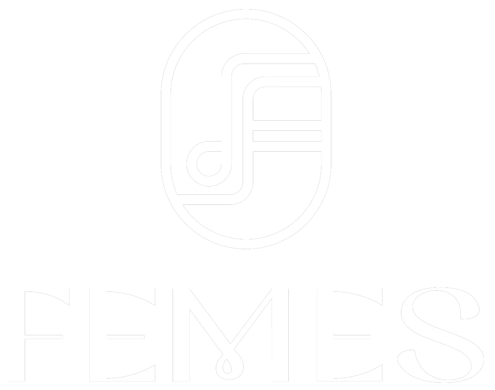
Bölgesel / YerelFemes
Femes, yerel üretim çizgisinde zeytinyağı sunan üretici olarak dizine eklenmiştir....
Ferhatoğlu
Ferhatoğlu, Aydın, Ege çizgisinde organik üretim çizgisinde zeytinyağı sunan üretici olarak öne çıkar....
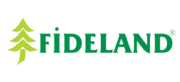
OrganikFİDELAND
FİDELAND, Burhaniye, Balıkesir çizgisinde organik üretim çizgisinde zeytinyağı sunan üretici olarak öne çıkar....
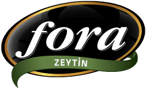
MarketFora
Fora Zeytin hakkında bilgi alın, alışveriş yapın. Türkiye...
Funoli
Milas Memecik zeytininden üretilen natürel sızma zeytinyağı sunan butik üretici. Soğuk sıkım ve yüksek polifenol vurgusuyla bilinir....
Gaia Oliva
Ayvalık hattında üretim yapan marka. Natürel sızma ve özel seri zeytinyağı ürünleri sunar....
Galia Garden
Galia Garden, yerel üretim çizgisinde zeytinyağı sunan üretici olarak dizine eklenmiştir....
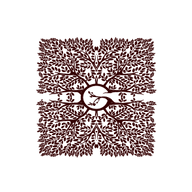
Premium / ButikGalli Premium
Eceabat Çan Ovası mevkiinden natürel sızma zeytinyağı üreten butik marka....
Gallipolive
Eceabat üretim tesislerinde soğuk pres natürel sızma zeytinyağı hazırlayan butik marka....
Ganos Olive Oil
Ganos Olive Oil, Ayvalık, Balıkesir çizgisinde natürel sızma ve özel seri zeytinyağı sunan üretici olarak öne çıkar....
Garisar
Yüksek polifenollü ve ödüllü natürel sızma zeytinyağı da sunan gurme üretici. Arbequina odaklı premium seriyle dikkat çeker....
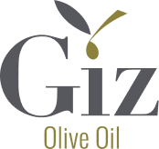
OrganikGiz Olive Oil
Organik üretim ile ilaçsız yetişen ve sadece kendimize ait zeytin bahçesinden ortalama yaşları 350 olan ölümsüz zeytin ağaçlarımızdan yaptığımız hasat ile zeytinyağımızı en saf hal...
Gödence
Gödence Tarımsal Kalkınma Kooperatifi şu anda dünya normlarında bir sanayi kuruluşu ile, zeytinyağı depolama tesislerine sahiptir. Zeytinyağının yanı sıra sabun, bal, reçel, pekmez...
Gümetepe
Ezine ve Çanakkale hattında zeytin ile natürel sızma zeytinyağı üreten yerel marka....
Güngör Zeytin
Güngör Zeytin Gıda Ambalaj Tic. San. AŞ....
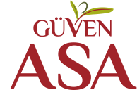
MarketGüven Asa
Gömeç’te modern üretim tesisi bulunan Kuzey Ege üreticisi. Erken hasat, natürel sızma ve riviera serileriyle geniş ürün gamı sunar....
HAS PREMIUM
Has Premium: Yeşil Zeytin, Siyah Zeytin - Natürel Sızma Zeytinyağ Çeşitleri...
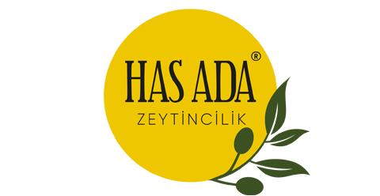
Premium / ButikHasada
Hasada, Ayvalık, Balıkesir çizgisinde natürel sızma ve özel seri zeytinyağı sunan üretici olarak öne çıkar....
Heraliv
Heraliv, yerel üretim çizgisinde zeytinyağı sunan üretici olarak dizine eklenmiştir....
Herdan
Herdan, Edremit, Balıkesir çizgisinde organik üretim çizgisinde zeytinyağı sunan üretici olarak öne çıkar....
Hermus
Akhisar ve çevresindeki zeytinlerden üretilen premium natürel sızma zeytinyağı markası....
Hiç Urla
Öyle saftır ki zeytinyağı aslında `Hiçtir`. `Hiç` bir ek istemez, süsleme kabul etmez, olduğu haliyle, tüm doğanın gerçekliğinin aynasıdır....
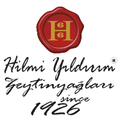
Premium / ButikHilmi Yıldırım Zeytinyağları
Hilmi Yıldırım Zeytinyağları, Aydın, Ege çizgisinde natürel sızma ve özel seri zeytinyağı sunan üretici olarak öne çıkar....
İlyada
Çanakkale Geyikli'den kaliteli Türk zeytinyağı markası. Natürel sızma zeytinyağı ve sofralık zeytin çeşitleri sunar....
İmbatto
Ayvalık hattından natürel sızma çeşitleri sunan üretici. Online satışta farklı şişe ve teneke seçenekleri bulunur....
İSKELE KOOPERATİFİ
İSKELE KOOPERATİFİ, Edremit, Balıkesir çizgisinde yerel üretim çizgisinde zeytinyağı sunan üretici olarak öne çıkar....
İzmir Birlik
İzmir bölgesi tarım kooperatifleri birliği (İZBİRLİK). Zeytinyağı dahil çeşitli tarım ürünlerinin işlenmesi ve pazarlanmasında faaliyet gösterir....
İznik Zeytin Evi
Zeytin ve Zeytinyağı’nın en doğal halini bulmak için çıktık yola… Katkısız, doğal ve sağlıklısını… Günümüzün endüstriyelleşmiş ürünlerine inat sabırla aradık en bozulmamış olanını…...
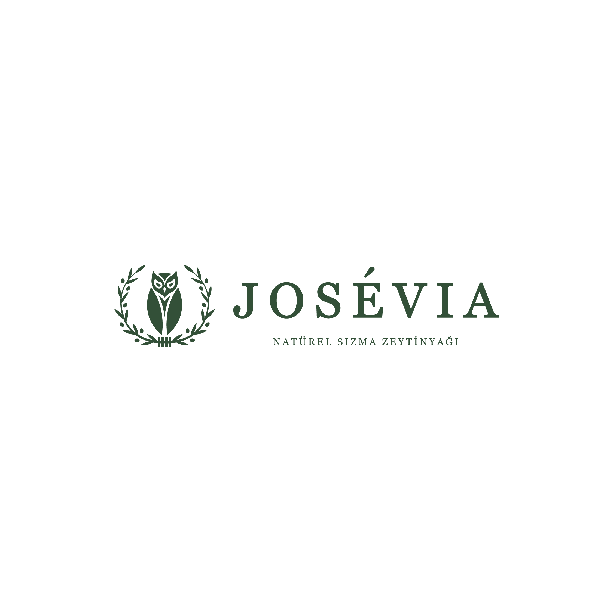
Premium / ButikJosevia
Ayvalık çevresindeki zeytinlerden sürdürülebilir üretim anlayışıyla natürel sızma sunan premium çizgi. Erken hasat ve soğuk sıkım ürünleriyle bilinir....
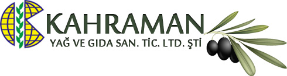
MarketKahraman
Akhisar merkezli üretici. Natürel sızma, riviera ve farklı paket boylarında zeytinyağı ürünleri bulunur....
Kairos Zeytinevi
Milas hattında organik, soğuk sıkım ve erken hasat zeytinyağları hazırlayan butik üretici. Şenköy çevresindeki zeytinlikler öne çıkar....
Kaleboğazı
Yolu soframızdan geçen sevdiklerimizden aldığımız talepler üzerine, kendimiz için ürettiğimiz bu mucizevi lezzeti, siz ve ailenizle de aynı özenle buluşturmak için Kaleboğazı zeyti...
Karadane
Karadane, Çanakkale çizgisinde natürel sızma ve özel seri zeytinyağı sunan üretici olarak öne çıkar....
Kavalan Zeytinyağları
Üreticiden; aracısız, doğal, lezzetli ve kaliteli Kuzey Ege Ayvalık erken hasat soğuk sıkım hakiki zeytinyağı. Yüksek meyvemsi koku, düşük asit katkısız hakiki zeytinyağı......
Kege Food
Burhaniye merkezli natürel sızma zeytinyağı ve zeytin ürünleri geliştiren yerel üretici....
Kesebir
Kesebir, Ayvalık, Balıkesir çizgisinde natürel sızma ve özel seri zeytinyağı sunan üretici olarak öne çıkar....
Kırlangıç
Uzun yıllardır Türk mutfağının vazgeçilmez zeytinyağı markalarından. Natürel sızma ve riviera çeşitleri bulunur....
Kilye
Eceabat çıkışlı çiğ sızma ve organik natürel sızma zeytinyağı serileri sunan butik marka....
Kirte
Eceabat Alçıtepe çıkışlı natürel sızma zeytinyağları sunan yerel üretici....
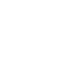
Premium / ButikKius
Kius Zeytin ve Zeytinyağı Gemlik’in bereketli Umurbey zeytinliklerinden sofralarınıza doğal lezzet ve sağlık getiriyor. Kius Zeytin ve Zeytinyağı, kalite odaklı ürünleri size sunuy...
Koral Zeytin
Akhisar merkezli üretici. Zeytin ve zeytinyağı ürünlerinde yerel üretim odaklıdır....
Kozoliv
Gömeç merkezli Kuzey Ege üreticisi. Üç nesillik aile mirası, erken hasat ve natürel sızma serileriyle öne çıkar....
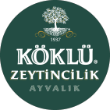
OrganikKöklü
Yılların verdiği tecrübeyle üstün lezzet ödüllü Ayvalık Zeytin ve Zeytinyağı firma Köklü Zeytincilik...
Kristal
Türkiye'nin en bilinen yemeklik yağ markalarından biri. Zeytinyağı dahil geniş yağ ürün gamı sunar. Market segmentinde güçlü konumu vardır....
Kudret Zeytinyağları
Kudret Zeytinyağları dünyanın en kaliteli zeytinleri ile üretilen Edremit zeytinyağı, siyah zeytin ve yeşil zeytinleri, Havrandan tüm Türkiye'ye göndermektedir....
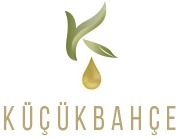
Premium / ButikKüçükbahçe
Karaburun çevresinden naturel sızma zeytinyağları sunan, geleneksel lezzet vurgulu butik üretici....
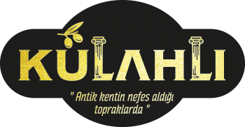
Bölgesel / YerelKülahlı Zeytinyağı
Külahlı Zeytinyağı, yerel üretim çizgisinde zeytinyağı sunan üretici olarak dizine eklenmiştir....
Lamponia
Ayvacık Kozlu çıkışlı erken hasat natürel sızma zeytinyağlarıyla öne çıkan aile üretimi butik marka....
Levi Farm
Levi Farm, yerel üretim çizgisinde zeytinyağı sunan üretici olarak dizine eklenmiştir....
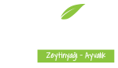
Premium / ButikLovida
Ayvalık Zeytinyağı ve Zeytin üreticisi Lovida. 4 nesildir zeytincilik yapan bir ailenin mükemmeli arama hikayesi....
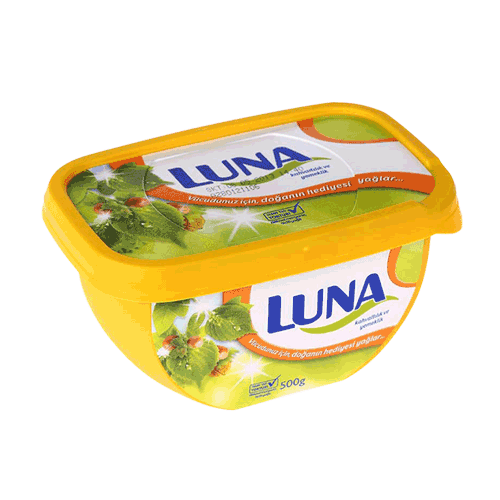
MarketLuna
Türkiye'de yaygın olarak tüketilen zeytinyağı ve yemeklik yağ markası. Uygun fiyatlı riviera ve natürel sızma zeytinyağı seçenekleri sunar....
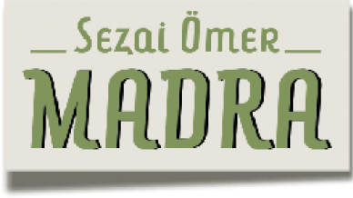
MarketMadra
Kuzey Ege bölgesinin kaliteli zeytinyağı markası. Edremit ve Ayvalık zeytinlerinden üretim yapar. Natürel sızma çeşitleri ile tanınır....
Mavras
Urla merkezli butik marka. Sınırlı seri ve erken hasat natürel sızma zeytinyağı üretimi yapar....
Mazınköy
Mazınköy Zeytinyağı 1950’den beri Aydın dağlarında bulunan bahçelerimizdeki asırlık zeytin ağaçlarını, geleneksel tarım yöntemleriyle yetiştirip meyvelerini ileri teknoloji imkanla...
Mekece Işık
Mekece Işık, Urla, İzmir çizgisinde natürel sızma ve özel seri zeytinyağı sunan üretici olarak öne çıkar....
Milas Zeytinyağları
Muğla'nın Milas ilçesinden üretim yapan yerel marka. Milas bölgesinin kendine has zeytin çeşitlerinden kaliteli yağ üretir....
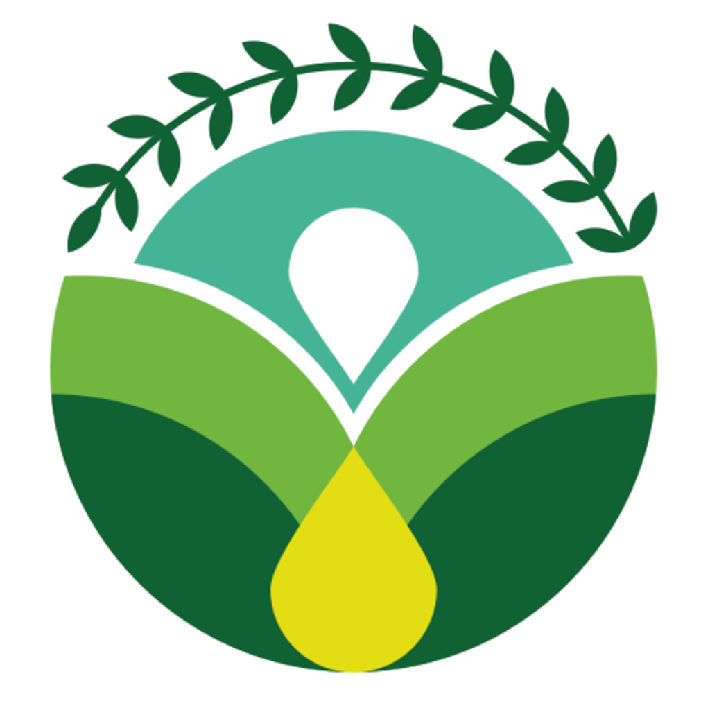
Premium / ButikMilasso
Milas çıkışlı yüksek polifenollü premium natürel sızma üreticisi. Erken hasat soğuk sıkım ve hediyelik seri seçenekleri sunar....
Miranda
Miranda Zeytin Ürünleri...
MonOlive
Premium zeytinyağı markası. Tek çeşit zeytinlerden üretilen butik natürel sızma zeytinyağları sunar....
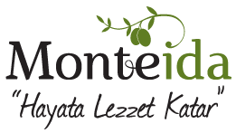
Premium / ButikMonteida
Zeytinyağı, Ayvalık zeytinlerinden soğuk sıkım, doğal, saf ve lezzetli Erken Hasat ve Natürel Sızma Zeytinyağı. Online Alışveriş, 2 günde teslimat....
Monterosso
Monterosso, yerel üretim çizgisinde zeytinyağı sunan üretici olarak dizine eklenmiştir....
MR Zeytin
Akhisar merkezli zeytin ve zeytinyağı üreticisi. Natürel sızma ürünleriyle öne çıkar....
Nar Gourmet
Premium gıda markası olup zeytinyağı portföyü de bulunur. Türk lezzetlerini dünyaya tanıtan ödüllü markadır....
Naturale
Naturale, Ayvalık, Balıkesir çizgisinde natürel sızma ve özel seri zeytinyağı sunan üretici olarak öne çıkar....
Naturel
Doğal ve saf zeytinyağı ürünleri sunan marka. Natürelliği ön plana çıkarır....
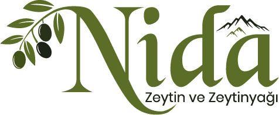
Premium / ButikNidazeytin
Nida Zeytin ve Zeytinyağları Balikesir Edremit Zeytinlide Butik çalişan bir zeytin işletmesidir....
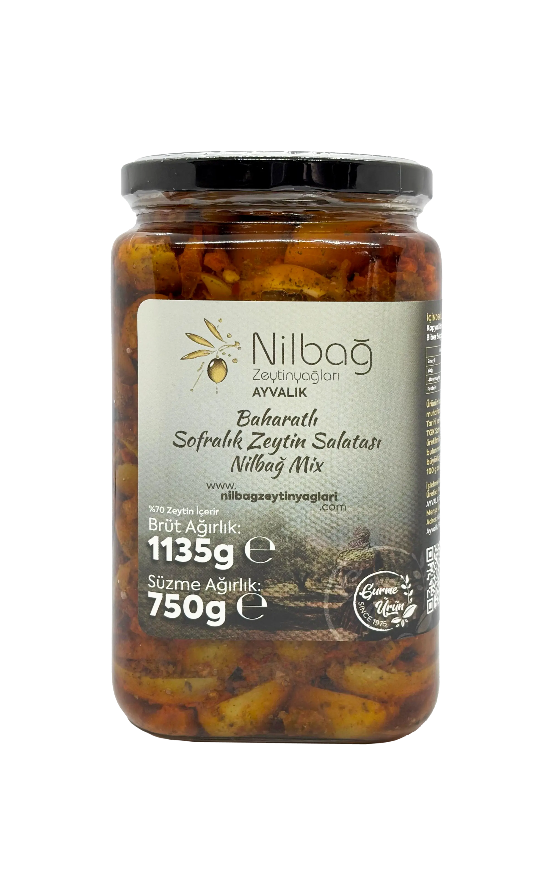
Premium / ButikNilbağ
Nilbağ Zeytinyağları, Ayvalık’ın bereketli zeytinlerinden elde edilen %100 doğal, erken hasat ve soğuk sıkım zeytinyağı ile gurme ürünler sunar. Sağlıklı yaşam için katkısız, yükse...
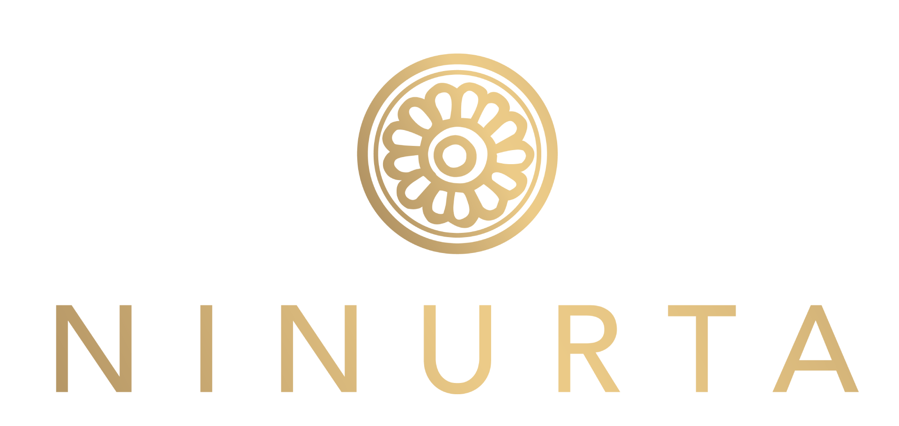
Bölgesel / YerelNinurta
Ninurta, yerel üretim çizgisinde zeytinyağı sunan üretici olarak dizine eklenmiştir....
Nish Olive
Premium butik zeytinyağı markası. Sınırlı üretimli, özenle seçilmiş tek çeşit zeytinlerden yüksek kaliteli natürel sızma zeytinyağı üretir....
No 35 Urla
No 35 urla atelier Doğal, Katkısız Gıda Üretimi Urla. salça, zeytinyağı, reçel, zeytin, vişne reçeli, çilek reçeli, yusufçuk, no35urla, tarhana, lavanta, lavanta yağı, doğal ürünle...
Odesa
Odesa, yerel üretim çizgisinde zeytinyağı sunan üretici olarak dizine eklenmiştir....
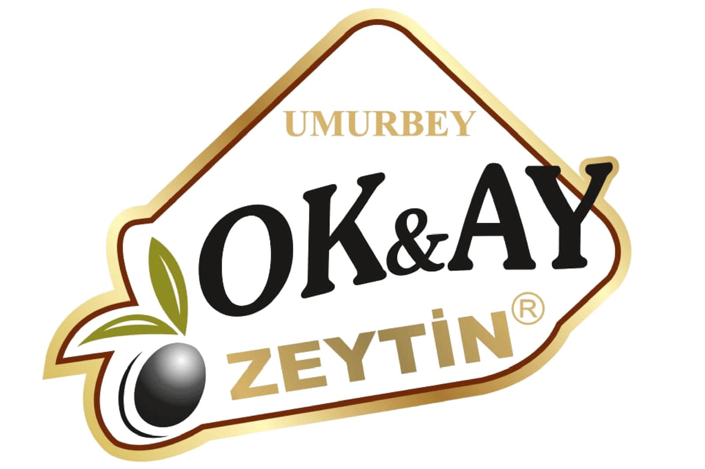
OrganikOKAY Zeytinleri
Okay zeytinleri gemlik ilçesinde zeytin zeytinyağı tuzsuz zeytin yeşil zeytin sofralık ürünleri satışı zeytin al satın...
Olea Aera
Olea Aera Soğuk Sıkım Zeytinyağı. Biz Olea Aera' yız. Ayvalık'tan hayatınızda doğal olana bir pencere açmaya, kişisel Zeytin Çağı’ nızı başlatmaya, bu yolculukta bize eşl...
Olea Prilis
Premium butik zeytinyağı markası. Uluslararası kalite standartlarında, düşük asitli natürel sızma zeytinyağı üretir....
OleTurk
Milas ve Ege havzasından zeytinlerle üretim yapan marka. Natürel sızma odaklı ürün portföyü sunar....
Oliella
Seferihisar çıkışlı erken hasat, soğuk sıkım natürel sızma zeytinyağları sunan butik üretici....
Olin
Olin, Urla, İzmir çizgisinde geniş dağıtım ağıyla zeytinyağı ürünleri sunan üretici olarak öne çıkar....
Oliova
Oliova, yerel üretim çizgisinde zeytinyağı sunan üretici olarak dizine eklenmiştir....
Olistica
Butik üretim yapan premium zeytinyağı markası. Sınırlı sayıda üretilen, tek çeşit (monocultivar) zeytinyağları ile tanınır....
Oliva Malia
Karaburun Yarımadası çıkışlı natürel sızma zeytinyağları sunan butik üretici. Ayvalık, Erkence ve yarımada serileri bulunur....
Oliva Troas
Oliva Troas, yerel üretim çizgisinde zeytinyağı sunan üretici olarak dizine eklenmiştir....
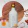
OrganikOlivalley
Zeytinyağının en saf hali Olivalley’de! Ege’den sofranıza gelen ultra premium natürel sızma zeytinyağlarımızla kaliteyi keşfedin ve bünyenizi güçlendirin....
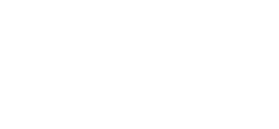
Premium / ButikOlivamore
Butik üretim anlayışına sahip zeytinyağı markası. Erken hasat natürel sızma ürünleri sunar....
Olive Mama
Organik ve doğal zeytinyağı markası. Kadın girişimciler tarafından kurulan, sürdürülebilir tarım odaklı butik üretici....
Olive811
Olive 811, Tek Bahçe konseptini benimsemiş, doğal sofralık zeytin ve düşük asit, erken hasat, soğuk sıkım natürel sızma zeytinyağı markasıdır....
OliveOilsLand
Zeytinyağı ürünlerinde premium ve butik segmentte yer alan marka....
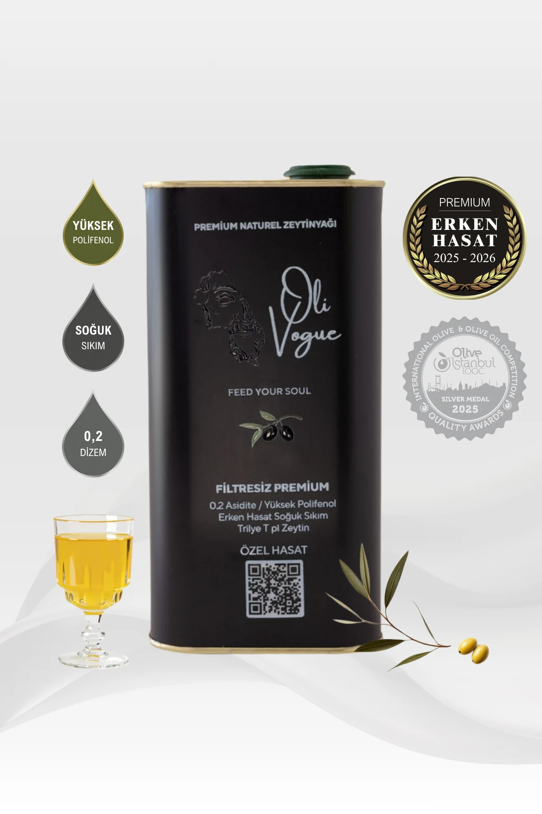
Premium / ButikOlivogue
Oli Vogue'un 7 kuşak Girit mirasıyla; en iyi Trilye zeytinlerinden soğuk sıkım yöntemiyle üretilen yüksek kaliteli zeytinyağlarını bugün keşfedin....
Olivos
Zeytinyağı bazlı ürünleriyle tanınan Türk markası. Zeytinyağı satışının yanı sıra zeytinyağlı sabun ve kozmetik ürünleri de üretir....
Olivurla
Urla bölgesinden premium zeytinyağı üreten butik marka. Urla'nın eşsiz mikro ikliminde yetişen zeytinlerden üretim yapar....
Olivya Gökçeovacık
Milas bölgesinde faaliyet gösteren butik marka. Yöresel karakterli natürel sızma zeytinyağı üretir....
On7 Zeytinyağı
Çanakkale yöresindeki kendi zeytinlerinden soğuk sıkım natürel sızma zeytinyağı üreten butik marka....
Onursel Zeytincilik
Onursel Zeytinyağları – Dalından Sofraya Gurme Zeytin Ürünleri...
Orfion
Ayvalık'ın bereketli topraklarından sofralarınıza, erken hasat ve soğuk sıkım premium zeytinyağları. Doğal lezzet, geleneksel üretim....
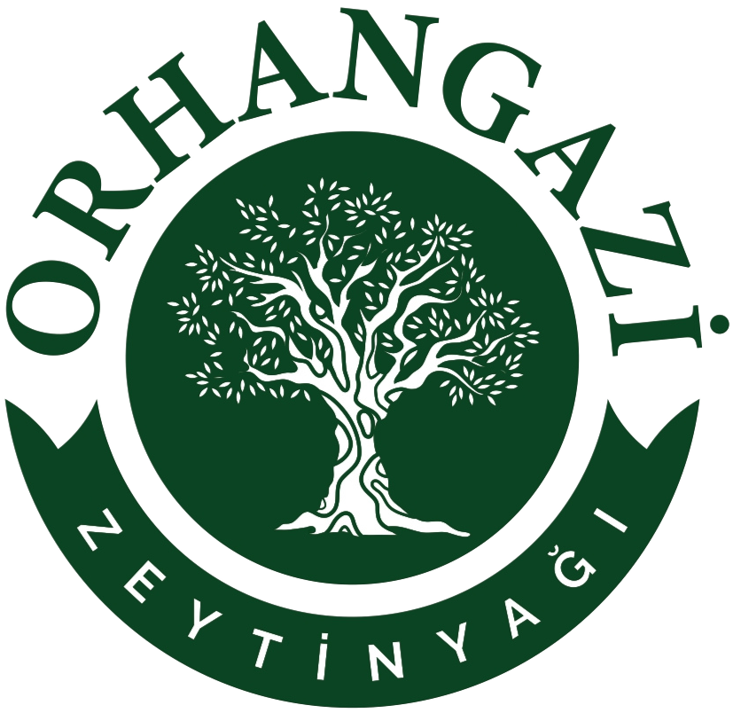
MarketOrhangazi Zeytincilik
Orhangazi Zeytincilik – Doğadan Sofranıza Saf Lezzet!...
Orkide
Sıvıyağ, zeytinyağı, bitkisel margarin, ev dışı tüketim yağları, pastacılık yağları ve endüstriyel yağ �?......
Oro di Milas
Milas bölgesinde aileye ait modern tesiste üretim yapan premium üretici. Coğrafi işaretli natürel sızma çizgisi ve kadın girişimciliği vurgusuyla öne çıkar....
Osman Menteşe Çiftliği
Milas Ağaçlıhöyük köyündeki Memecik zeytinlerinden butik zeytinyağı üretir. Soğuk sıkım ve sınırlı üretim vurgusu yapar....
OVE Foods
Zeytin ve zeytinyağı odaklı gıda markası. Natürel sızma ve gurme segment ürünler sunar....
Ölberg Milet
Milet bölgesinden erken hasat ve soğuk ekstraksiyon premium zeytinyağı üretir. Yüksek polifenol ve uluslararası ödül diliyle öne çıkar....
Öz Köyüm
Öz Köyüm, yerel üretim çizgisinde zeytinyağı sunan üretici olarak dizine eklenmiştir....
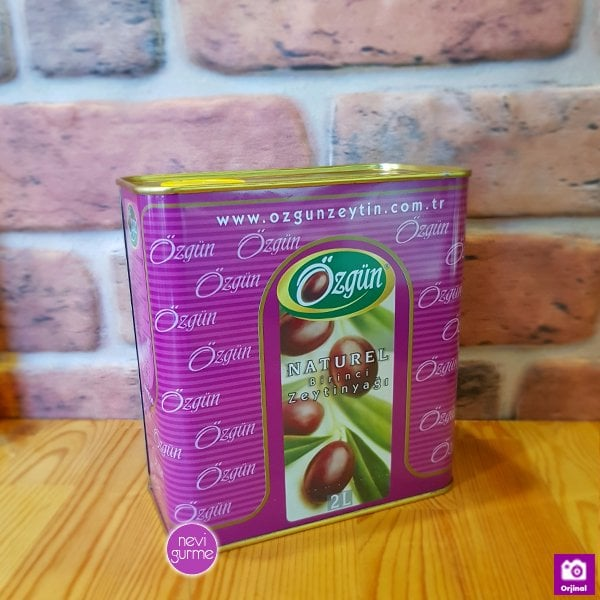
Premium / ButikÖzgün Olive
Butik üretim yapan zeytinyağı markası. Soğuk sıkım natürel sızma zeytinyağı ve aromatik zeytinyağı çeşitleri sunar....
Palamidas
Akhisar merkezli aile üreticisi. Soğuk sıkım natürel sızma ve organik serileriyle öne çıkar; resmi mağazasında cam şişe ve teneke seçenekleri sunar....
Pazarbaşılar
Eceabat ve Gelibolu Yarımadası çevresinden natürel sızma zeytinyağları sunan köklü üretici....
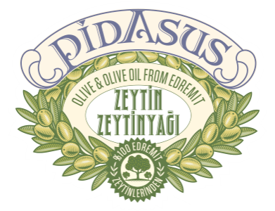
Premium / ButikPidasus
Pidasus – Doğal Zeytin ve Zeytinyağları...
PİR OLIVE OIL
Pir Olive Oil. Zeytinyağı. Erken hasat sızma zeytinyağı, natürel sızma zeytinyağı...
Polat Zeytinyağı
Ege bölgesinde uzun yıllardır zeytinyağı üreten aile şirketi. Geleneksel yöntemlerle kaliteli natürel sızma zeytinyağı üretir....
Ravla Gurme
Yüksek polifenollü ve ödüllü zeytinyağı serileri hazırlayan gurme üretici. Anadolu süper gıdaları yanında zeytinyağı seçkisiyle de öne çıkar....
Raya Organik
Organik üretim çizgisinde zeytin ve zeytinyağı ürünleri de sunan üretici. Doğal içerik ve sertifikalı üretim vurgusuyla öne çıkar....
Riccolivo
Riccolivo Premium Erken Hasat Naturel Sızma Zeytinyağı, Kaz Dağları’nın oksijene doymuş zeytin ağaçlarından elde edilen exclusive bir zeytinyağıdır. Yemekler ve salatalar için müke...
Roda Farm
Roda Farm kalitesiyle çeşnili zeytinyağı, natürel zeytinyağı ve nar ekşisi lezzetlerini hemen keşfedin. Hızlı kargo ile uygun fiyatlı gurme lezzetleri deneyimleyin....
Sabuncugil
Ayvalık kökenli geleneksel üretici marka. Natürel sızma ve bölgesel ürünleriyle bilinir....
Safitad
Erken hasat, olgun hasat ve private reserve serileri sunan natürel sızma odaklı üretici. Kendi bahçeleri ve tesis anlatımıyla premium çizgi kurar....
Sakallı Zeytincilik
Akçay Sakallı Zeytincilik Edremit Körfezinin En Köklü Zeytincilerindendir. Zeytin ile Sofralarınıza Sağlık, Lezzet ve Doğallık Getiriyoruz....
Sarraf Olive Oil
Sarraf Olive Oil – Web...
Seferis
Seferihisar Ulamış çevresinde organik soğuk sıkım natürel sızma zeytinyağı sunan yerel üretici....
Selatin
Geleneksel yöntemlerle üretim yapan zeytinyağı markası. Doğal ve katkısız ürünleri ile bilinir....
Semylasa
Milas yöresinden üretim yapan premium marka. Natürel sızma zeytinyağı çeşitleriyle öne çıkar....
Seosfarm
Seferihisar hattında erken hasat ve özel seri natürel sızma zeytinyağları geliştiren üretici....
Seroliva
Seroliva, Zeytin Tutkusu Organik Sertifikalı, Düşük asitli Memecik, Kalamata, Domat cinsi zeytinlerden üstün lezzetli organik zeytinyağları üretir....
Sokol
Kalite Aile Geleneğimizdir... Ayvalık yöresine has zeytinlerden özenle seçilerek hazırlanan ürünlerimiz, nesillerdir kaliteden ödün vermeden damağınızda eşsiz bir tat bırakmak için...
Somak
Somak Zeytincilik, Ayvalık ve Kuzey Ege’nin doğal zeytinlerinden üretilen natürel sızma zeytinyağı ve zeytin çeşitlerini sofranıza taşır....
Taşaltı
Kuşaklar öncesine dayanan bir miras bu. Türkiye’nin ilk zeytinyağı fabrikasında çalışan büyük dedemiz ile başladı ve bize bırakmak istediği miras, kendi sofralarımıza ailemize çocu...
Terra Vigla
Sakallı Gıda Tarım Turizm İşletmelerine ait arazilerden toplanan zeytinlerden üretilmiş Ayvalık zeytin ve zeytinyağı ürünleri....
The Mill
350 yıllık tarım geleneği, teknoloji ile buluştu. Zeytinyağı, zeytin, tahin, pekmez ve çok daha fazlası The Mill uzmanlarının üretimiyle sizlere sunuluyor. The Mill, ihtiyacınız ol...
Tlos Olive
Zeytin ağacının ana özelliği ölümsüz olmasıdır. Tlos Olive...
Tuay
Organik natürel sızma zeytinyağı ve farklı seri sınıflandırmaları bulunan üretici. Ege zeytinlerini soğuk sıkım ve duyusal analiz vurgusuyla sunar....
Tuna Zeytincilik
Edremit Körfezinin bereketli topraklarından özenle seçtiğimiz zeytinlerle elde edilen ödüllü zeytinyağlarımızla dört kuşaktır sofralarınıza misafir olmaktan gurur duyuyoruz. Kalite...
Uğurlu Zeytinyağları
Uğurlu Zeytinyağları, yerel üretim çizgisinde zeytinyağı sunan üretici olarak dizine eklenmiştir....
Ustalı
Ustalı, Ayvalık, Balıkesir çizgisinde natürel sızma ve özel seri zeytinyağı sunan üretici olarak öne çıkar....
Uzman Çiftlik
Uzman Çiftlik, Edremit, Balıkesir çizgisinde organik üretim çizgisinde zeytinyağı sunan üretici olarak öne çıkar....
Varol
Varol ZeytincilikTARİHÇE Varol Zeytincilik olarak, 2014 yılında Anadolu bölgesinde perakende......
Verde
Kuzey Ege odaklı zeytinyağı markası. Erken hasat natürel sızma ve farklı ambalaj seçenekleriyle öne çıkar....
Veysel Kaptan
Ayvalik – Ayvalik Zeytinyagi...
Via Zeytinyağı
Ayvalık Zeytincilik...
Vievi
Aydın Karacasu’da Türkiye’nin yüksek rakımda en büyük zeytin bahçesinden elde edilen, yüksek polifenol değerine sahip, altın madalyalı, soğuk sıkım Vievi zeytinyağları sofranıza ve...
Villa Turqan
Soğuk sıkım natürel sızma serileri ve aromalı ürünleri bulunan butik üretici. Bahçeden birkaç saat içinde sıkım vurgusuyla dikkat çeker....
Yasemin Hanım Zeytinyağları
Yasemin Hanım Zeytinyağları...
Yerlim
Yerlim | Değirmen Çiftlik | Sertifikalı Organik Üretim | Organik Ürünler...
Yeşil İris
Yeşil İris, Çanakkale çizgisinde organik üretim çizgisinde zeytinyağı sunan üretici olarak öne çıkar....
Yudum
Türkiye'nin en büyük yemeklik yağ markalarından biri. Savola Group bünyesinde faaliyet gösterir. Zeytinyağı dahil geniş ürün gamı mevcuttur....
Yükseloğulları
Yükseloğulları, organik üretim çizgisinde zeytinyağı sunan üretici olarak dizine eklenmiştir....
Zagoda
Ödüllü natürel sızma zeytinyağlarıyla öne çıkan üretici. Erken hasat ve özel seri şişeleriyle premium segmentte yer alır....
Zarbalı
Zarbalı, yerel üretim çizgisinde zeytinyağı sunan üretici olarak dizine eklenmiştir....
Zavendik
Zavendik Zeytinyağı – Türkiye'nin AB Tescilli İlk Zeytinyağı...
Zelena
Zelena, yerel üretim çizgisinde zeytinyağı sunan üretici olarak dizine eklenmiştir....
ZenOlive
Edremit tipi Ayvalık zeytinlerinden soğuk sıkım yağ üreten küçük ölçekli üretici. Tek bahçe ve iyi tarım vurgusuyla öne çıkar....
Zest Ayvalık
Zest Ayvalık - Erken Hasat Soğuk Sıkım Gerçek Ayvalık Zeytinyağı...
Zetay
Edremit Körfezi odaklı üretici. Bölgesel zeytinlerden natürel sızma ve riviera ürünleri sunar....
Zethoveen
Soğuk sıkım ve erken hasat natürel sızma zeytinyağı sunan premium üretici. Doğal üretim dili ve özel seri yaklaşımıyla tanınır....
ZEYDAĞ
Osmaniye’nin Düziçi ilçesinde kurulan Zeydağ, zeytinyağı üretiminin özünü ve geleneksel değerlerini modern teknolojiyle harmanlayarak sizlere sunmaktadır. Kendi üretim ve paketleme...
Zeytin Dalı
Ege bölgesinden natürel sızma zeytinyağı üreten marka. Geleneksel ve modern üretim yöntemlerini birleştirerek kaliteli ürünler sunar....
Zeytin İskelesi
Zeytin İskelesi, yerel üretim çizgisinde zeytinyağı sunan üretici olarak dizine eklenmiştir....
ZeytinAna
Gemlik zeytini, Gemlik Zeytinyağı, yeşil zeytin, zeytinyağı, taş baskı zeytinyağı, soğuk sıkım zeytinyağı, turşu, reçel, tarhana, şarküteri ve kozmetik ürünleri satışı yapmaktadır....
ZEYTİNİN TÜRKÜSÜ
Zeytinin Turkusu...
Zeytinsan
Akhisar merkezli daha geniş ölçekli üretici. Farklı segmentlerde zeytinyağı ürünleri sunar....
Zeytunç Olive
Erken hasat soğuk sıkım Ayvalık zeytinyağı ile sofralarınıza gerçek lezzet katın. %100 doğal, yoğun aromalı ve taze üretim....